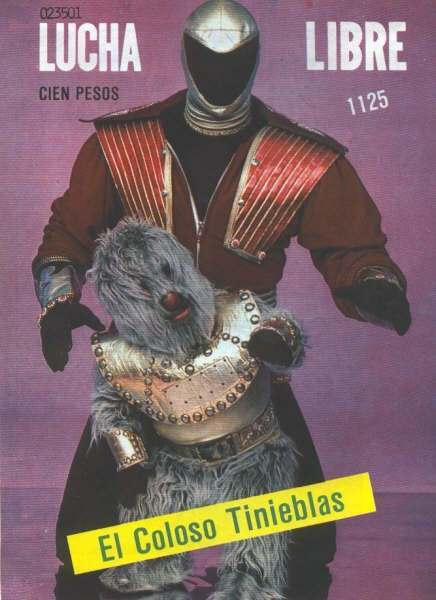

Berita Sepakbola, Live Scores, Hasil & Transfer | Goal.com Indonesia
 Berita Live Scores Liga & Piala Semua Liga & Piala Liga 1 Liga Primer Liga Champions Serie A LaLiga Bundesliga Liga Europa Ligue 1 FA Cup League Cup Coppa Italia Copa del Rey DFB Pokal AFF Championship AFC Champions League AFC Cup Kualifikasi Kejuaraan Eropa Kualifikasi PD Asia Transfer Jadwal TV Klasemen Tim All Teams Manchester United FC Liverpool FC Arsenal FC Chelsea FC Juventus Milan Internazionale Persib Persija Arema Persebaya Surabaya Barcelona Real Madrid Indonesia Manchester City FC Roma Atlético Madrid Bayern Munich Paris Saint-Germain FC Persipura NXGN Highlight Klasemen Liga Inggris Jadwal Liga Inggris Klasemen Liga 1 Belanja Indonesia Pilih Bahasa Pilih Edisi Anda Indonesia Kembali Deutsch English Español Français Indonesia Italiano Magyar Nederlands Português Türkçe Việt Nam العربية ไทย 한국어 日本語 简体中文 繁體中文 Live Scores
Berita Sepakbola
Berita Terbaru Pertandingan Hari IniLIVE: Arsenal vs Liverpool
Arsenal FC v Liverpool FC 02:14Selamat Tinggal Scudetto? Juve Diimbangi Torino
Torino v Juventus 00:59Bekap Leicester, Man City Makin Dekati Juara
Leicester City FC v Manchester City FC 01:22Gol Asensio & Benzema Bungkam Eibar
Real Madrid v Eibar 23:21Pelatih Ansan Tak Menyesal Ubah Posisi Asnawi
Ansan Greeners 19:07Tuchel: Kami Tak Pantas Kebobolan Lima Gol!
Chelsea FC 22:04Chelsea 2-5 West Brom: The Blues Tumbang Dalam Drama Tujuh Gol
Chelsea FC v West Bromwich Albion FC 20:37Asnawi Debut Di K2 League, Main Sebagai Winger & Dapat Poin
K League 2 16:05Polisi Amankan Paket Kokain 50 Kg Berlogo CR7!
Juventus 12:13AC Milan 1-1 Sampdoria: Gol Menit Akhir Selamatkan AC Milan
Milan v Sampdoria 19:29Trent Diabaikan Inggris, Klopp Catut Nama Messi
Liverpool FC 12:43Video
Ada Rp3,3 Triliun Tidak Berputar Akibat Kompetisi Berhenti
Persija 26/02/21Sutan Zico Ingin Jadi Seperti Mbappe
FIFA 21 09/01/21Video Highlight & Cuplikan Pertandingan Liga Inggris, Liga Jerman & Lainnya!
Mola TV 19/02/21Goal Video
Kehadiran Sergio Aguero Di Barcelona Akan Membuat Lionel Messi Bertahan
Transfer 20:00Inilah Deretan Kekalahan Aneh Timnas Jerman
Jerman 01/04/21KARTUN: Haaland Gantikan Aguero?
Goal 31/03/21Studi CIES: Pemain Terbaik Di Lima Liga Top Eropa Pada 2021
Galeri 31/03/21Bisa Tantang Dunia! Luar Biasanya XI Lokal & Keturunan Aljazair
Galeri 31/03/21Peringkat IFFHS: 25 Tim Terbaik Sedekade Terakhir
Galeri 30/03/21Alaba, Nainggolan & XI Terbaik Keturunan ASEAN
Galeri 30/03/2120 Klub Asia Dengan Market Value Tertinggi
Galeri 29/03/21Bocoran Jersey Sederet Klub Top Eropa Musim 2021/22
Galeri 29/03/21Membayangkan Timnas Indonesia Berisi Pemain Keturunan
Indonesia 29/03/21 Lebih LanjutTerbaru
Liga 1 Liga Primer Persib Persebaya Surabaya Persela Ligue 1 Arsenal FC Persiraja Banda AcehBeda Nasib PSG & Bayern Jelang Bentrok Di Liga Champions
Ligue 1 02:31Aji Enggan Pilih Calon Lawan Persebaya Di Delapan Besar
Persebaya Surabaya 23:59Apa & Kapan Piala Menpora 2021 - Jadwal, Hasil & Info Lengkap
Liga 1 23:22Ditahan Persela, Persebaya Tetap Lolos Ke Delapan Besar
Persebaya Surabaya 20:16Kehadiran Sergio Aguero Di Barcelona Akan Membuat Lionel Messi Bertahan
Transfer 20:00Seru! Persik Kediri Kalahkan Madura United
Liga 1 17:45Hendri Susilo Berharap Persiraja Tak Dibubarkan
Liga 1 12:00Odegaard Enggan Lanjut Di Arsenal?
Arsenal FC 11:39Pep: Man City Tidak Mampu Beli Haaland
Manchester City FC 11:25Scholes: Solskjaer Layak Dapat Kontrak Baru Tapi Man United Bakal Sulit Juara
Manchester United FC 11:01RESMI: HNK Rijeka Perkenalkan Brylian Aldama
Liga 1 08:25 Lebih LanjutBerita lain
LaLiga Juventus Serie A Liga 1 Real Madrid Transfer Persija Arsenal FCDari Drama Anfield 89 Hingga Mengemis Empat Besar
Arsenal FC v Liverpool FC 06:30Dapat Sanksi, McKennie, Dybala & Arthur Tidak Tampil Lawan Torino
Juventus 06:12Lolos Ke Perempat-Final, Persib Tak Ubah Target
Persib 03/04/21Jelang Delapan Besar, Persija Bolak-Balik Malang & Jakarta
Persija 02/04/21Kumpulan Artikel Pilihan Goal Indonesia
Goal 02/04/21Juventus Jajaki Transfer Gelandang Italia Locatelli €40 Juta
Juventus 02/04/21Jadwal, Hasil & Klasemen La Liga
LaLiga 02/04/21Sebelum Gabung Everton, James Nyaris Membelot Ke Atletico
Real Madrid 02/04/21 Lebih Lanjut Hubungi Kami Syarat & Kondisi Kebijakan Privasi Pengaturan Privasi Karier Goal App Goal App Goal Live Goal LiveHak Cipta © 2021 Goal (Indonesia) Hak cipta dilindungi oleh undang-undang. Dilarang menerbitkan, menyiarkan, menulis ulang, atau menyebarkan informasi dari situs ini tanpa meminta izin tertulis dari Goal (Indonesia)
Tutup